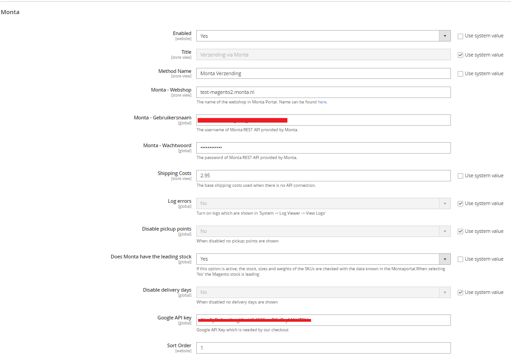

Magento Checkout
Met de Magento checkout kunnen bezorgopties worden getoond aan de klant in de Magento webshop bij het afrekenen.
Belangrijk bij Magento checkout
Magento is een open-source softwarepakket die u zelf op een server installeert en onderhoud. Onze checkout module ondersteund de standaard Magento installatie. Het kan echter zijn dat uw webshop aanpassingen heeft, bijvoorbeeld andere plugins, waardoor problemen ontstaan met de Monta checkout plugin. Het is voor Monta niet mogelijk om alle plugins van de wereld goed samen te laten werken. Daarom hebben we de programmacode vrij beschikbaar gemaakt op GitHub zodat de klant zelf een aangepast versie van de checkout kan (laten) maken om deze problemen op te lossen. Bij problemen met veelgebruikte plugins kunnen we natuurlijk kijken of we een oplossing kunnen bieden in onze standaardversie.
Aanvullend betekend dit dat niet elke checkout het zelfde is.
Talen
De volgende talen in de Magento checkout worden ondersteund:
- Nederlands
Configuratie
- Zorg dat de klant de module Monta Checkout op Magento heeft geïnstalleerd.
- De klant kan de app vinden in Stores > Configuration > Sales > Shipping Methods > Montapacking
- Maak in de MP REST Api gegevens aan
- De klant kan in de instellingen de benodigde velden vullen:

Algemene informatie en functies
Van de volgende functies is bekend dat Magento het wel ondersteund:
- Berekenen van verzendmethoden inclusief prijs
- Weergeven van verzendopties
- Weergeven van levertijden
- Leverdag kiezen
- Automatisch geselecteerde verzender gebaseerd op voorkeur uit montaportal
- Aanpassen van verzendernaam
Van de volgende standaard functies is bekend dat Magento het niet ondersteund:
Van de volgende aanvullende functies is bekend dat Magento het niet ondersteund:
Known issues & bugs
Gratis verzending op coupons werken niet. Deze hebben geen invloed op de prijzen in de plugin. Wel is er een github branch waar een gelimiteerde oplossing is gemaakt voor klanten die dit toch werkend willen hebben. U moet deze wijzigingen dan zelf overnemen. Let op, dit kan problemen veroorzaken met het toestaan van gratis verzending na het selecteren van een verzendoptie in onze checkout.
Alle prijzen die naar de REST Api gaan zijn de originele prijzen, kortingen hebben dus geen invloed op de berekende verzendprijs. Dit betekent dat wanneer er door korting de winkelmandprijs onder de gratis verzendinggrens komt er alsnog gratis verzending acties zou worden.